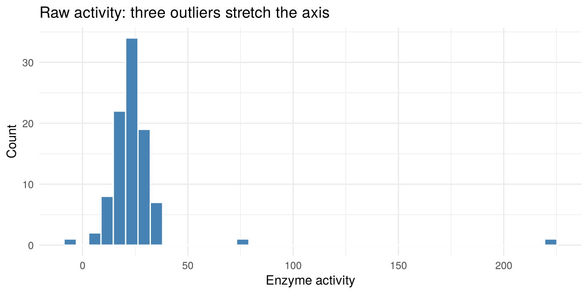
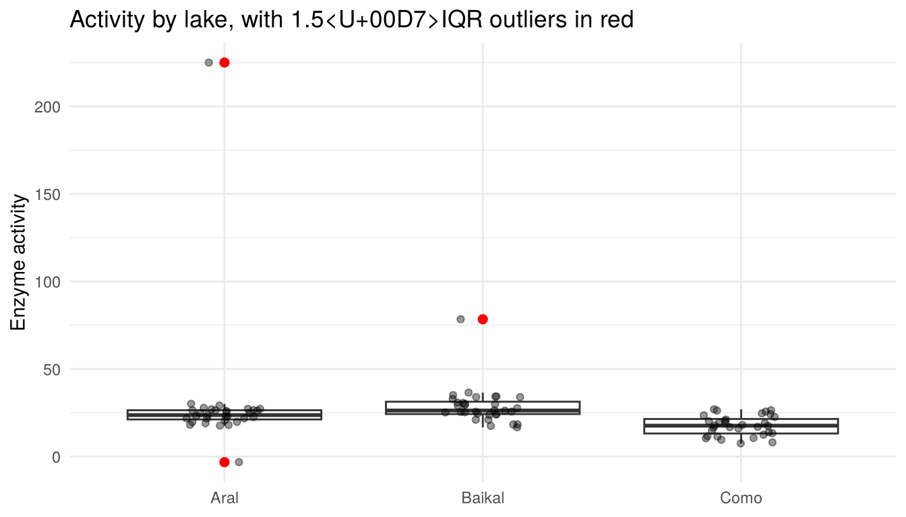
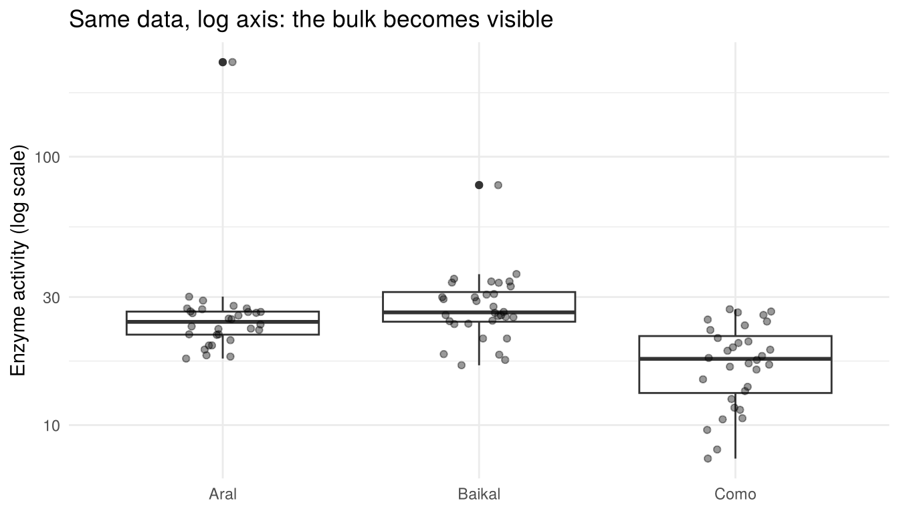
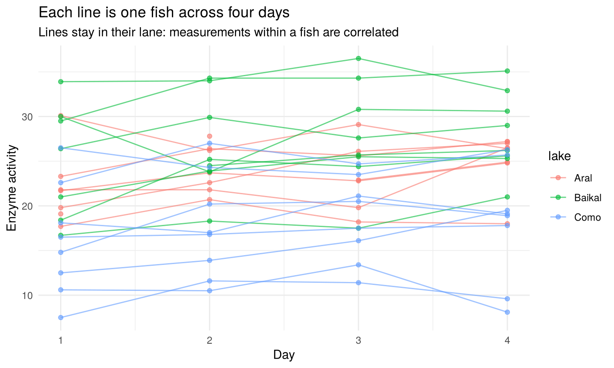

Code
library(dplyr)
library(tidyr)
library(ggplot2)
library(forcats)
library(stringr)
library(broom)library(dplyr)
library(tidyr)
library(ggplot2)
library(forcats)
library(stringr)
library(broom)Margin legend
DEF — definition KEY — key idea to remember ↪ — bridge to another lecture ⚠ — common pitfall
The lecture addressed obtaining good data before they exist. This practical addresses the immediately following step: a spreadsheet is now available, and before a single model is fitted it must be examined: its structure checked, its errors found, its outliers identified and, crucially, its observations assessed for independence.
This is a tutorial. It is intended to be read with R open, running each chunk and modifying it to observe the consequences. The code is shown by default for exactly that reason. The code, however, is not the point; the habits are. Every technique here answers one of four questions that should be asked of any dataset before analysis:
The Tidyverse is used throughout — dplyr and tidyr for reshaping and summarising, ggplot2 for visualisation, forcats for categorical variables, and broom for converting model output into tidy tables — because these tools are built around the concept of tidy data, which is where the chapter begins.
Rather than a clean textbook dataset, we simulate one resembling what a laboratory would actually deliver: enzyme activity measured in fish from three lakes, with each fish measured on four consecutive days. Simulating the data has the same virtue it had in the design chapter: because the problems were planted deliberately, the correct answers are known, and the quality control can be checked against them.
Two features are deliberate. First, the measurements are repeated within each fish, so rows belonging to the same fish are correlated — the dependence structure towards which the chapter builds. Second, the kinds of faults real data carry have been planted: two impossible outliers, a unit-conversion error, a missing value, and some miscoded lake names.
set.seed(42)
n_fish <- 8; n_day <- 4
lakes <- c("Aral", "Baikal", "Como")
fish_id <- 1:24
fish_intercept <- rnorm(24, 0, 4) # each fish's own baseline
lake_effect <- c(Aral = 0, Baikal = 3, Como = -2)
dat <- expand.grid(fish = fish_id, day = 1:n_day)
dat$lake <- lakes[((dat$fish - 1) %/% n_fish) + 1]
dat$activity <- 20 + lake_effect[dat$lake] + fish_intercept[dat$fish] +
0.8 * dat$day + rnorm(96, 0, 2)
dat$activity <- round(dat$activity, 1)
# --- plant realistic faults ---
dat$activity[10] <- 78.4 # sensor glitch: impossibly high
dat$activity[55] <- -3.2 # impossible negative activity
dat$activity[30] <- dat$activity[30] * 10 # unit error (mg vs g)
dat$activity[7] <- NA # missing value
dat$lake[c(3, 40)] <- c("aral", "Baikal ") # miscoded factor levels
dat <- as_tibble(dat)
dat#> # A tibble: 96 x 4
#> fish day lake activity
#> <int> <int> <chr> <dbl>
#> 1 1 1 Aral 30.1
#> 2 2 1 Aral 17.7
#> 3 3 1 aral 21.7
#> 4 4 1 Aral 19.8
#> 5 5 1 Aral 23.3
#> 6 6 1 Aral 19.1
#> 7 7 1 Aral NA
#> 8 8 1 Aral 21.8
#> 9 9 1 Baikal 33.9
#> 10 10 1 Baikal 78.4
#> # i 86 more rowsThe printed tibble shows the four columns — fish, day, lake, activity — and the first rows of the 96 observations. Nothing in this first view reveals the planted faults; that is precisely why a systematic quality-control pass is required. Everything below is the process of earning the right to trust these data.
Before any summary or plot, the convention that the whole Tidyverse — and, implicitly, most of statistics — assumes should be stated. Data are tidy when:
The object dat is already tidy in this sense: activity, fish, day and lake are four variables, and each row is one measurement. This is exactly the spreadsheet header the design chapter derived from the model; the tidy shape and the model are two views of the same plan.
Tidy is not the only shape in which data arrive, and reshaping is a routine quality-control step. Data are often recorded wide — one row per fish, one column per day — which is convenient for data entry but unsuitable for analysis. tidyr moves between the two with pivot_longer and pivot_wider. Since pivot_wider is used later to inspect dependence, the conversion is shown here in miniature.
wide <- dat |>
select(fish, day, activity) |>
pivot_wider(names_from = day, values_from = activity,
names_prefix = "day_")
wide#> # A tibble: 24 x 5
#> fish day_1 day_2 day_3 day_4
#> <int> <dbl> <dbl> <dbl> <dbl>
#> 1 1 30.1 26.2 29.1 26.4
#> 2 2 17.7 20.7 18.2 18
#> 3 3 21.7 23.7 22.8 24.8
#> 4 4 19.8 22.6 26.1 27
#> 5 5 23.3 26.4 25.6 27.2
#> 6 6 19.1 225 22.9 24.9
#> 7 7 NA 27.8 -3.2 27.2
#> 8 8 21.8 21.8 19.8 26.5
#> 9 9 33.9 34 36.5 32.9
#> 10 10 78.4 24.5 25.7 26.2
#> # i 14 more rowsThe wide table has one row per fish and one column per day. In this layout the four measurements of a fish sit on one line, and an anomalous value is more readily noticed by eye. The rule of thumb is therefore: analyse long, inspect wide. Models require one row per observation; visual inspection is often more effective in the wide layout.
The single most important habit in this chapter is to inspect the structure before computing anything. Three functions do almost all the work — glimpse for the column types, summary for the ranges, and a count of missing values. They should be run the moment a dataset arrives.
glimpse(dat)#> Rows: 96
#> Columns: 4
#> $ fish <int> 1, 2, 3, 4, 5, 6, 7, 8, 9, 10, 11, 12, 13, 14, 15, 16, 17, 18~
#> $ day <int> 1, 1, 1, 1, 1, 1, 1, 1, 1, 1, 1, 1, 1, 1, 1, 1, 1, 1, 1, 1, 1~
#> $ lake <chr> "Aral", "Aral", "aral", "Aral", "Aral", "Aral", "Aral", "Aral~
#> $ activity <dbl> 30.1, 17.7, 21.7, 19.8, 23.3, 19.1, NA, 21.8, 33.9, 78.4, 30.~glimpse immediately reveals two problems: lake is a character, not a factor, and activity runs to implausible values. Before any mean is trusted, the extremes and the missingness are checked explicitly.
dat |>
summarise(
n = n(),
n_missing = sum(is.na(activity)),
min = min(activity, na.rm = TRUE),
max = max(activity, na.rm = TRUE),
median = median(activity, na.rm = TRUE)
)#> # A tibble: 1 x 5
#> n n_missing min max median
#> <int> <int> <dbl> <dbl> <dbl>
#> 1 96 1 -3.2 225 23.7The summary reports one missing value, a minimum below zero, and a maximum of 225 for an enzyme activity whose median sits near 24. Each of these is a fault that would otherwise have been carried, undetected, into every downstream model. This is the numerical equivalent of Fisher’s post-mortem warning: the fault is caught now rather than after the analysis has failed.
The lake variable’s actual content is compared with its intended content.
dat |> count(lake)#> # A tibble: 5 x 2
#> lake n
#> <chr> <int>
#> 1 "Aral" 31
#> 2 "Baikal" 31
#> 3 "Baikal " 1
#> 4 "Como" 32
#> 5 "aral" 1Three lakes have become five “levels”: a lowercase aral and a trailing-space Baikal have split off as phantom categories. Left uncorrected, every group summary and every model would treat these as separate lakes. This is the most common and most invisible error in real biological data, because it survives a glance at the numbers: the values are correct; only their labels are broken.
The remedy is a normalise-then-recode step. Whitespace is trimmed and case standardised, after which forcats locks the levels into a known, ordered set.
dat <- dat |>
mutate(
lake = lake |> str_squish() |> str_to_title(), # "Baikal " -> "Baikal", "aral" -> "Aral"
lake = fct_relevel(lake, "Aral", "Baikal", "Como")
)
dat |> count(lake)#> # A tibble: 3 x 2
#> lake n
#> <fct> <int>
#> 1 Aral 32
#> 2 Baikal 32
#> 3 Como 32The count now shows three clean levels of 32 rows each. forcats is useful here and again later: fct_relevel fixes the reference level (which determines how model coefficients read), and fct_reorder — introduced in the plotting section — orders categories by the data so that plots reveal structure rather than concealing it alphabetically.
With the categories clean, the group_by |> summarise idiom provides the per-group description that constitutes the first real view of the biology. Several statistics are computed at once, and the missing-value count and the group size are always carried alongside the mean; a mean without its \(n\) is not a summary.
lake_summary <- dat |>
group_by(lake) |>
summarise(
n = n(),
n_fish = n_distinct(fish),
n_missing = sum(is.na(activity)),
mean = mean(activity, na.rm = TRUE),
sd = sd(activity, na.rm = TRUE),
median = median(activity, na.rm = TRUE),
IQR = IQR(activity, na.rm = TRUE)
)
lake_summary#> # A tibble: 3 x 8
#> lake n n_fish n_missing mean sd median IQR
#> <fct> <int> <int> <int> <dbl> <dbl> <dbl> <dbl>
#> 1 Aral 32 8 1 29.4 36.8 23.7 5.25
#> 2 Baikal 32 8 0 28.6 10.6 26.3 7.05
#> 3 Como 32 8 0 17.6 5.68 17.6 8.3Two features of this table deserve attention. The standard deviations of Aral and Baikal are very large relative to that of Como — a direct fingerprint of the outliers planted in those two lakes. And the n versus n_fish columns quietly tell the dependence story: 32 rows but only 8 fish per lake. Those 32 numbers are not 32 independent facts; this is the subject of the final section.
The pairing of mean with median and sd with IQR is also deliberate. The mean and standard deviation are sensitive to outliers; the median and IQR are robust to them. When the two disagree sharply — as they do for Aral and Baikal — the disagreement is itself a diagnostic that something extreme is present.
Numbers summarise; plots reveal. The reason to plot before modelling is that summary statistics can conceal everything that matters — the classic demonstration is Anscombe’s quartet, four datasets with identical means, variances and correlations but entirely different shapes. The habit to be formed is: never trust a summary that has not been plotted.
A histogram or density plot is the first view. Here the planted outliers make the scale itself the story.
ggplot(dat, aes(activity)) +
geom_histogram(bins = 40, fill = "steelblue", colour = "white") +
labs(title = "Raw activity: three outliers stretch the axis",
x = "Enzyme activity", y = "Count") +
theme_minimal()
The bulk of the data is compressed into a narrow band on the left because three points sit far to the right. That compression is the diagnostic: a distribution that should form a compact mound instead has a long, empty tail with a few isolated points, and those isolated points are what must be investigated.
The boxplot is the single most useful quality-control plot, because it shows the median, the IQR and the outliers (by the 1.5×IQR rule) for every group at once. Overlaying the raw points — jittered so they do not stack — reveals the sample size and the individual values behind the summary.
ggplot(dat, aes(lake, activity)) +
geom_boxplot(outlier.colour = "red", outlier.size = 2) +
geom_jitter(width = 0.15, alpha = 0.4) +
labs(title = "Activity by lake, with 1.5×IQR outliers in red",
x = NULL, y = "Enzyme activity") +
theme_minimal()
The red points are exactly the values flagged by the IQR rule: two in Aral and one in Baikal. The plot performs the outlier detection directly: no fences need be computed by hand to see that some lakes carry extreme values and Como does not.
When outliers dominate the scale, a logarithmic axis allows the bulk and the extremes to be seen together without removing anything. This is a display choice, not a change to the data: the values are untouched; only the axis is stretched.
ggplot(dat, aes(lake, activity)) +
geom_boxplot() +
geom_jitter(width = 0.15, alpha = 0.4) +
scale_y_log10() +
labs(title = "Same data, log axis: the bulk becomes visible",
x = NULL, y = "Enzyme activity (log scale)") +
theme_minimal()
On the logarithmic axis the three lakes’ distributions become comparable and their medians and spreads can be read. The negative planted value is absent from this plot, since it has no logarithm — itself a useful signal that the value is impossible for this measurement.
The three plots answer the same question at increasing resolution. The histogram shows that the overall distribution is distorted by a small number of extreme values; the grouped boxplot locates them in their lakes and identifies them individually; the log-scale version confirms that, once the extremes are set aside, the three lakes have distributions of similar shape and spread, differing in location. The plots therefore convert the vague impression of “large standard deviations in Aral and Baikal” from the summary table into a specific list of observations to investigate.
The eye is good at noticing outliers but poor at defending the judgement. Two rules make the decision reproducible, and it is worth knowing both because they can disagree.
The 1.5×IQR rule (used by the boxplot) flags any point below \(Q_1 - 1.5\,\text{IQR}\) or above \(Q_3 + 1.5\,\text{IQR}\). The robust z-score, or MAD rule, measures each point’s distance from the median in units of the median absolute deviation, and flags anything beyond approximately 3.5. It is called robust because, unlike the ordinary z-score, its centre and spread are not themselves displaced by the outliers they are intended to detect.
dat <- dat |>
mutate(
med = median(activity, na.rm = TRUE),
MADv = mad(activity, na.rm = TRUE),
rob_z = (activity - med) / MADv,
is_outlier = abs(rob_z) > 3.5
)
dat |>
filter(is_outlier) |>
select(fish, day, lake, activity, rob_z)#> # A tibble: 3 x 5
#> fish day lake activity rob_z
#> <int> <int> <fct> <dbl> <dbl>
#> 1 10 1 Baikal 78.4 9.00
#> 2 6 2 Aral 225 33.1
#> 3 7 3 Aral -3.2 -4.43The rule flags exactly the three planted points — the sensor glitch (78.4), the unit error (225.0) and the impossible negative (−3.2). This is the moment for the judgement the design chapter anticipated: an outlier is not automatically an error. Here the three are known to be faults because they were constructed. In real data each would be investigated: the negative value is physically impossible and must be corrected or removed; the ×10 value is a classic unit slip that may be recoverable; a merely large value might be entirely real biology that there is no justification for deleting. The rule identifies candidates; only knowledge of the system settles them.
For this tutorial the three are treated as genuine errors and set to missing, to be handled explicitly downstream rather than silently dropped.
dat_clean <- dat |>
mutate(activity = if_else(is_outlier, NA_real_, activity)) |>
select(fish, day, lake, activity)Everything so far has been housekeeping. This final section connects the lecture day together, and it is where the quality-control habit earns its keep. The design chapter taught the recognition of non-independent measurements — rats in a box, pieces of a liver, repeated measures on a subject. Here that non-independence is observed directly in the data, using the same tidy tools.
Each fish was measured on four days. The question is whether those four measurements are four independent facts or four correlated views of the same fish. Plotting the raw trajectories answers it immediately.
dat_clean |>
mutate(fish = factor(fish)) |>
ggplot(aes(day, activity, group = fish, colour = lake)) +
geom_line(alpha = 0.6) +
geom_point(alpha = 0.6) +
labs(title = "Each line is one fish across four days",
subtitle = "Lines stay in their lane: measurements within a fish are correlated",
x = "Day", y = "Enzyme activity") +
theme_minimal()
This “spaghetti plot” is the visual signature of repeated-measures dependence. Each fish traces its own roughly horizontal line, well separated from the others. A fish that is high on day 1 is high on days 2–4; the measurements do not scatter freely but cluster by individual. Were the 96 rows truly independent, the lines would be tangled noise with no per-fish coherence. They are not.
The dependence can be quantified. The data are reshaped to wide — one column per day — and the days are correlated with one another.
dat_clean |>
select(fish, day, activity) |>
pivot_wider(names_from = day, values_from = activity,
names_prefix = "day_") |>
select(starts_with("day_")) |>
cor(use = "pairwise.complete.obs") |>
round(2)#> day_1 day_2 day_3 day_4
#> day_1 1.00 0.89 0.93 0.90
#> day_2 0.89 1.00 0.93 0.92
#> day_3 0.93 0.93 1.00 0.92
#> day_4 0.90 0.92 0.92 1.00Every off-diagonal correlation is high and positive, around 0.9. Day 1 predicts day 4 almost perfectly, because both are mostly reporting which fish this is. That shared fish identity is precisely the dependence a naive analysis would ignore.
The consequence deserves to be stated starkly, because it is the same pseudoreplication error as in the design chapter, now quantified. The row count is compared with the number of genuine experimental units.
dat_clean |>
summarise(
rows = n(),
true_units_fish = n_distinct(fish)
)#> # A tibble: 1 x 2
#> rows true_units_fish
#> <int> <int>
#> 1 96 24A model treating all 96 rows as independent believes it has 96 experimental units. It has 24. That fourfold inflation of the sample size would shrink every standard error, narrow every confidence interval, and confer significance that was not earned — the “false power” described in the discussion of blocking. The purpose of seeing the dependence now is that it decides what you may do later: on Day 7 the fish, not the row, is what gets resampled and held out.
The spaghetti plot, the day-by-day correlation matrix and the unit count are three expressions of one fact: the 96 rows are organised in 24 groups, and the within-group similarity is strong. The plot shows the structure qualitatively; the correlation matrix quantifies it at roughly 0.9; the unit count states its consequence for inference. Together they translate the abstract notion of the experimental unit from the design chapter into a property of the data that can be measured, and they explain why resampling on Day 7 must respect the fish.
One further tool closes the loop between quality control and modelling. When a model is fitted, its default print output is a block of text that is difficult to compute on. broom converts any model into a tidy tibble, so that model results become another dataset that can be filtered, arranged and plotted with the same verbs.
As a preview — and as a demonstration of why the dependence matters — the naive linear model that wrongly ignores fish identity is fitted and its coefficients tidied.
naive_fit <- lm(activity ~ lake + day, data = dat_clean)
tidy(naive_fit, conf.int = TRUE) |>
mutate(across(where(is.numeric), \(x) round(x, 3)))#> # A tibble: 4 x 7
#> term estimate std.error statistic p.value conf.low conf.high
#> <chr> <dbl> <dbl> <dbl> <dbl> <dbl> <dbl>
#> 1 (Intercept) 21.5 1.50 14.4 0 18.6 24.5
#> 2 lakeBaikal 3.26 1.28 2.55 0.013 0.719 5.81
#> 3 lakeComo -6.11 1.27 -4.81 0 -8.63 -3.58
#> 4 day 0.874 0.462 1.89 0.062 -0.045 1.79tidy returns one row per coefficient with its estimate, standard error, test statistic, p-value and confidence interval. The lake contrasts and the day slope are reported with standard errors computed as if the 96 observations were independent; these standard errors are too small.
glance(naive_fit) |>
select(r.squared, sigma, df, nobs) |>
mutate(across(where(is.numeric), \(x) round(x, 3)))#> # A tibble: 1 x 4
#> r.squared sigma df nobs
#> <dbl> <dbl> <dbl> <dbl>
#> 1 0.414 4.96 3 92glance returns one row of whole-model summaries. The nobs column reports the number of observations the model believes it has, which, as the previous section established, is four times the number of experimental units.
glimpse, summary and an explicit missing count catch most serious faults immediately.forcats locks levels down.broom makes model output tidy, so the same verbs that cleaned the data also interrogate the models.The simulate-then-analyse loop is the engine of the practicals in this course, and this one has walked through every step of it: a data set was generated whose truth was controlled, corrupted in the way real collection corrupts data, its structure recovered with tidy tools, and the dependence that a careless analysis would miss exposed. The quality-control pass should be run before any modelling, because the habit of inspecting first is the one that will preserve a real analysis later.